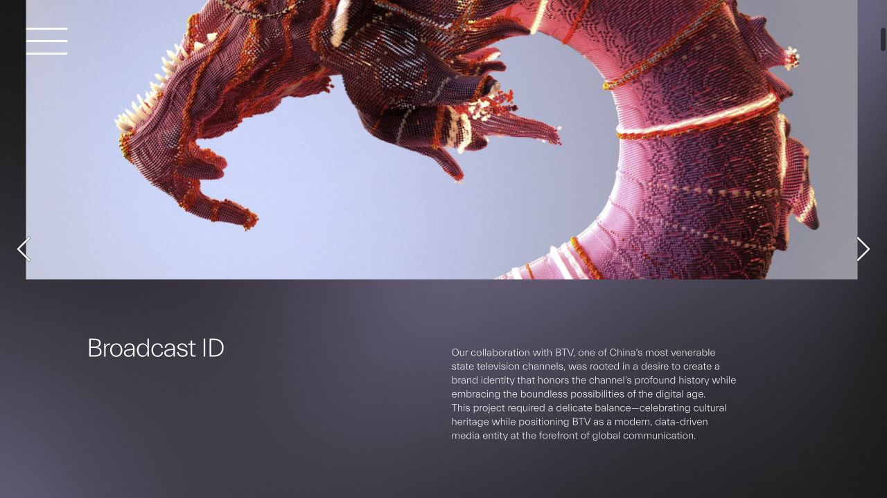
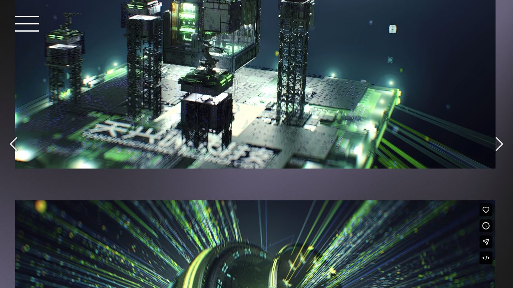

原图加载中
原图加载中Studio Dumbar / DEPT® 首要参考
Modyfi
字母由结构生成
- 原作怎么做
- 官方案例以可变化的 M 为核心；符号的层次和角度延伸到网格、数字、图标与版式。
- 我们学什么 设计推导
- 借鉴造型方法：让字母成为一个结构的结果。对 TokenMini，可研究圆环的折转、连接与留白怎样自然产生 T。
- 适用边界
- 不沿用它的 M 轮廓或高饱和配色；持续变形也不适合常驻菜单栏。
查看官方动态结构演示
来源与核验范围
官方文字已核对，官方页面与动态画面已打开查看。
非常规 Logo 的参考研究：从产品主题出发，找到一种独特的结构，再让它延伸为图标、字标、动效与材质。
以下是 7 组真实作品参考，包含不同年份的案例。关于 TokenMini 的适配度和创作路线是本次设计判断；本页为创作前研究，研究后的第一轮草案另页展示。
圆环或循环感、绿色片段、隐含的 T；避开突出的尖角。
把标准 T 放进圆圈，只解决了组合问题，还没有解决品牌特征。
单色与小尺寸先成立，再延伸你认可的金属和绿色玻璃。
原图加载中字母由结构生成
官方文字已核对，官方页面与动态画面已打开查看。
 原图加载中
原图加载中少量模块形成整体
官方文字已核对，官网的 New Nature 图形与品牌符号已目视查看；媒体直链可能受来源限制。
 原图加载中
原图加载中字标和符号共用规则
官方文字和媒体地址已核对；动态演示可在页面中手动播放。
 原图加载中
原图加载中用计算规则组织识别
官方设计说明已核对；原图直链由官方案例页提供，网页工具取图曾返回 403。
 原图加载中
原图加载中抽象形态具有主题依据
官方设计说明、静态海报来源已核对，并打开查看品牌动态画面；没有逐帧审阅整支品牌影片。
变化本身表达产品含义
官方设计说明与 App icon 图片来源已核对；原图直链的网页工具请求曾返回 403。

原图加载中数据成为有体积的视觉

BTV 官方说明已通过网页检索核对；本地两张截图已保存。官网部分请求失败，未宣称完成视频逐帧核验。
参考的是构造方法，不移植任何品牌的独特轮廓。三条路线都需接受单色、小尺寸与同领域相似性检查。
圆环自身折转或对接，在连续轮廓中留下 T。用圆润转折消除突兀尖角，绿色段成为结构的一部分。
借鉴 Modyfi 的一体结构思路，再接 N3 材质。避免走成常见无限环、旋涡。
两到三个计量单元形成近圆的整体，空隙暗示 T。让 Token 的分段与聚合成为造型依据。
借鉴 Cohere 的组合关系和 Graphcore 的生成规则。避免平均分割的饼图和加载标记。
两个相互呼应的弧形截面，通过不同曲率围出 T 形空隙，兼顾圆环感与陌生感。
用两个部分汇聚到一个工具的隐喻表达 AI 用量与 Mac 状态。避免眼睛、盾牌或导航标的误读。